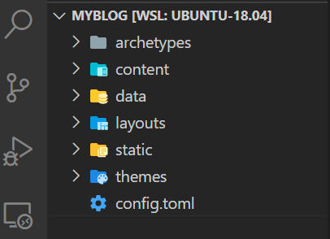
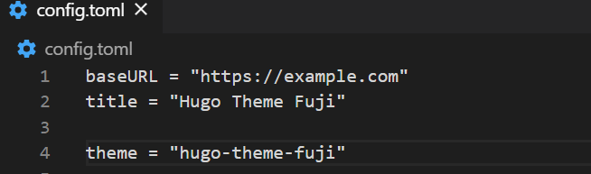
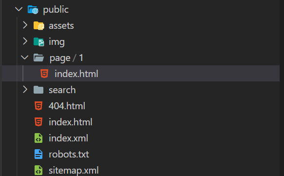
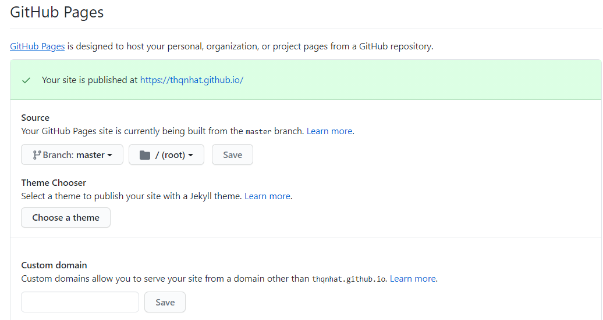

Yeah. This is real. My blog is live 😊
Long time ago, I would like to make a blog to share my experience and my point of view but I’m not able to arrange myself to do that. Recently, I viewed some technical blogs that hosted by GitHub and they are inspring me how I can build fastly a blog with GitHub pages.
And that I would like to share with you in this article.
How to build a blog hosted by GitHub and with Hugo (one of the most open-source static site generators)
Steps to go:
- Install Hugo on a Linux machine
- Create a new static website
- Download a custom theme
- Create a GitHub repository
- Deploy your generated contents to the GitHub repository
- Activate the GitHub pages
1. Install Hugo on a Linux machine
You can download the lastest version of Hugo (0.79.0 at the time writing this article) from Hugo website. I’m using a Ubuntu machine. Therefore, I just need to run the below command line to download it :
$ cd ~
$ wget https://github.com/gohugoio/hugo/releases/download/v0.79.0/hugo_0.79.0_Linux-64bit.tar.gz
$ tar -xvf hugo_0.79.0_Linux-64bit.tar.gz
$ sudo cp hugo /usr/local/bin
I can test if the installation work as expected with this command line:
$ hugo version
2. Create a new static website
Now, we start to create a static website. Let’s run this script:
$ cd ~
$ hugo new site myblog
The above script will create a website’s folder named myblog with the default structure on my root folder:

- content: folder containing yours pages and yours posts
- data: folder containing your data
- layouts: folder containing your layouts
- static: folder containing your static assets
- themes: folder containing your theme
- config.toml: your configuration file
3. Download a custom theme
A default website is created but it’s content is still empty. You can choose the best theme for it on the Hugo theme.
From the themes folder of myblog website, let’s run the below command line to download a custom theme named Fuji :
$ cd ~
$ cd myblog/themes/
$ git clone https://github.com/amzrk2/hugo-theme-fuji
Then, we need to override the default configuration of our website (config.toml) with the configuration given by Fuji theme.
$ cd ~
$ cd myblog/
$ cp ./themes/hugo-theme-fuji/exampleSite/config.toml ./config.toml
Just make sure that the theme’s name found in config.toml match with the theme’s name folder.

Next, we could run the website on our local machine:
$ cd ~
$ cd myblog/
$ hugo server
Your website is now up and running at http://localhost:1313/ Congratulation!
3. Create a GitHub repository
The next step is creating a empty GitHub repository that host your website’s generated contents. From your GitHub account, create a new reposity with name: [your_github_username].github.io Let’s use the default configurations (don’t select “Add a README file”)
4. Deploy your generated static contents into the GitHub repository
Let’s run the below command line to generate the website’s static contents:
$ cd ~
$ cd myblog/
$ hugo
The above command will create a public folder containing all generated contents (html & css files).

Now, we can initialize a git project and push the generated contents to the repository created on GitHub.
$ cd ~
$ cd myblog/public/
$ git init
$ git remote add origin https://github.com/[YOUR_GITHUB_USERNAME]/[YOUR_GITHUB_USERNAME].github.io.git
$ git add .
$ git commit -m "First commit"
$ git push
Your generated contents is now published into your repository in GitHub.
5. Activate the GitHub pages
Go to the Settings blade of your repository.
In GitHub Pages section, select master branch and root as default configuration

Let’s wait some minutes and then you should see your website running at https://[YOUR_GITHUB_USERNAME].github.io
CONGRATULATION!!